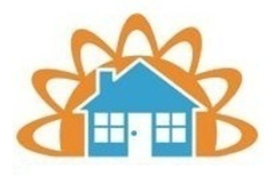

Shelters
Athens Area Homeless Shelter
Athens Area Homeless Shelter provides collaborative, comprehensive services to homeless individuals and families working toward sustainable independence.
To go directly to their donate page, click here.
Homeless members of our community, whom we call guests while they are with us, arrive at the Good Neighbor Shelter in crisis. The loss of shelter, a most basic human need, is the presenting problem. However, many circumstances lead to becoming homeless – there is usually not just one event that pushes a person into homelessness. Thus, there is a need for the shelter to have a program that assists guests in identifying and dealing with a broad range of variables to facilitate the guest’s return to self-sufficiency.
To go directly to their donate page, click here.

Atlanta Mission meets each person where they are, in their unique circumstances, to provide customized services to help them overcome the cause of their homelessness.
To go directly to their donate page, click here.
The mission of City of Refuge is to transform and revitalize the city of Atlanta. While this may sound like a lofty goal, the staff, volunteers, and residents witness miracles on a daily basis at City of Refuge. We provide on-campus interventions and programs that are categorized in one of the four major Impact Areas.
To go directly to their donate page, click here.
The North East Georgia Homeless Veterans Shelter, a 501C (3) non-profit ministry, in Winder Georgia, that serves homeless veterans in Northeast Georgia area. We have identified a need for a Homeless Veteran’s shelter, with over 420 homeless Veterans in the surrounding area, and even more in northeast Georgia. Currently, our shelter has the capacity to provide up to 52 beds to Homeless Veterans.
To go directly to their donate page, click here.
Clothing
The Middle Georgia Community Food Bank exists to supply food and other commodities to 501(c)(3) Participating Agencies helping needy people in Middle Georgia. The mission of the MGCFB is to provide the maximum amount of food possible to our Participating Agencies at the lowest possible cost to reach the maximum number of needy people.
To go directly to their donate page, click here.
Created in 1985, the Georgia Food Bank Association (GFBA) is a membership association serving seven regional food banks in Georgia, which collectively distribute more than 130 million pounds of food annually to over 2,000 partner nonprofits with food assistance programs throughout the state. The Association’s eight regional food banks and their more than 2,600 partner agencies make it one of the largest associations in the state of Georgia.
To go directly to their donate page, click here.
Every year, we work with more than 600 nonprofit partners—including food pantries, community kitchens, childcare centers, night shelters and senior centers—to distribute over 60 million meals to more than 755,000 people in 29 counties across metro Atlanta and north Georgia.
To go directly to their donate page, click here.
The Food Bank of Northeast Georgia is a 501(c)3 that recovers donated and salvaged surplus food and distributes it to human-service agencies that then distribute the food to residents in need. The Food Bank works with local, regional, state and national product partners to bring food into the community.
To go directly to their donate page, click here.
Georgia Mountain Food Bank’s (GMFB) mission is to address hunger, health and quality of life by serving those in need throughout North Georgia. GMFB provides a vital link between sources of food supplies and hardworking community-based partner agencies who help get the food into the hands of families and individuals who need it. Whether it’s distributing food or serving the community through outreach programs, initiatives and resources, Georgia Mountain Food Bank’s time to serve is now.
To go directly to their donate page, click here.
Food
Every day, thousands of men and women face barriers that make it difficult for them to find work and earn a paycheck to support their families. Sometimes it’s lack of training or education, limited job skills, or a disability. But with the support of donors and shoppers like you, we overcome those barriers. Goodwill gives people the tools they need to find a job which allows them to support themselves and their families.
To go directly to their donate page, click here.
he Bremen Food and Clothing Bank is a 501(c)(3) non-profit organization that strives to serve Haralson county and the surrounding areas one family at a time. We try our best to provide a safe and friendly atmosphere where families can find food for their tables, clothing to warm their bodies, and a message of hope that will soothe their souls.
To go directly to their donate page, click here.
The Mission is focused on helping all men, women, and children through Christ. It is critical now more than ever that we work with the local community and our friends and supporters to provide hope, redemption, and empowerment to those who come our way, along with the tools and encouragement necessary to rebuild their lives.
To go directly to their donate page, click here.
Our mission is to serve the needs of those in our community by operating a Thrift Shop where gently-used household goods and clothing can be re-sold at fair and reasonable prices. To provide an opportunity for volunteers to perform community service in a positive and productive way. Profits, after expenses are paid and reserves met are distributed by mutual Board decision as scholarships, vouchers and grants to qualified recipients and 501c3 organizations.
To go directly to their donate page, click here.